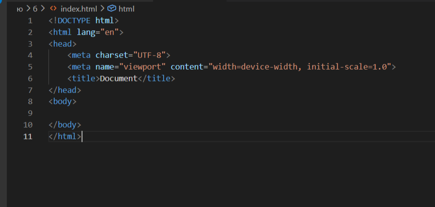
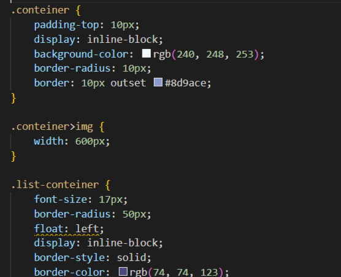

bootstrap
Bootstrap — бесплатный CSS-фреймворк с открытым исходным кодом для создания сайтов и веб-приложений. Помогает стилизовать базовый контент.
Содержание
Чтобы создать интернет-ресурс с нуля, надо выбрать платформу, домен и хостинг, разработать структуру и дизайн, подготовить контент. Рассказываем, на что обратить внимание при создании сайта и как сделать его самостоятельно, если у вас нет опыта в программировании.

Если вы создаёте онлайн-площадку с нуля, первый шаг — выбор домена. Это уникальное имя сайта. Домен обычно содержит название бренда — например, https://www.kinopoisk.ru.
Вот о чём важно помнить:
Дальше остаётся зарегистрировать домен. Эта услуга платная, цена зависит от географической зоны, количества символов и регистратора — организации, продающей права на доменное имя.
Хостинг — это услуга, которая предоставляет место на сервере, где хранятся все данные сайта: тексты, изображения, видео. Владелец ресурса арендует хостинг у провайдера — компании, которая владеет сервером. Вот по каким критериям выбирают хостинги.
Скорость работы. Важны два параметра:
Чем меньше показатели, тем быстрее загружаются разделы сайта. Скорость работы хостинга проверяют в специальных сервисах.
Uptime. Это метрика, которая позволяет увидеть, сколько времени сайт работает без простоев. Измеряется в процентах, идеальный показатель — это 95–100%.
Техническая поддержка. Уточните, насколько быстро отвечают специалисты и в какое время. От этого зависит скорость решения вашей проблемы, если веб-сайт перестанет открываться.
Местонахождение. Российские провайдеры обязаны хранить данные на отечественных серверах. Заранее уточните это в поддержке хостинга, чтобы избежать риска блокировки.
Объём хранилища. От него зависит, сколько данных вмещает сервер. Объём провайдеры прописывают в тарифах. Чем больше страниц и контента, тем больше места он займёт на сервере.
Некоторые провайдеры предлагают сразу и зарегистрировать домен, и купить хостинг. Это удобный вариант, но стоит проверить условия соглашения и уточнить, кому принадлежит доменное имя. Если оно принадлежит провайдеру, то, когда вы решите сменить хостинг, потеряете и домен.
Дизайн-концепция — визуальное отображение веб-сайта. Она даёт понимание, как будут выглядеть основные блоки информации. Вот несколько рекомендаций, которые помогут вам создать концепцию.
Учитывайте требования юзабилити. Юзабилити (usability) — это показатель того, насколько посетителю сайта удобно пользоваться интерфейсом. Сайт должен быть удобен и полезен для пользователя. Разрабатывайте дизайн таким образом, чтобы эти критерии были на первом месте. Благодаря этому пользователь сможет быстрее решить свою задачу, а вы получите лояльного клиента.
Сосредоточьтесь на общем визуальном представлении. Выберите цветовую гамму, соберите несколько референсов и объедините их в мудборд — коллаж из подходящих иллюстраций, шрифтов и цветовых схем.
Подумайте о восприятии сайта посетителями. Если выбираете цветовую гамму, оцените, как отреагируют на неё пользователи. Так, кислотные оттенки могут смотреться интересно, но от их большого количества глаза быстро устанут.
Проверьте, чтобы элементы сочетались между собой. Буквы разного размера и перегруженная цветовая гамма усложняют восприятие. Выберите один шрифт, 2–3 цвета и придерживайтесь общей стилистики.
Оставляйте свободное пространство. Не загромождайте сайт текстом, изображениями, интерактивными элементами. Если все статьи и блоки размещены вплотную друг к другу, пользователю будет тяжело сконцентрироваться. Оставляйте свободное место между единицами контента — так разделы выглядят легче и удобнее.
Перед погружением в разработку необходимо правильно настроить рабочее окружение. Это фундамент, который определит скорость и комфорт вашей работы на всех этапах проекта.
Скачиваем python.
Переходим по ссылке Visual studio code. Запускаем скаченный файл.
При работе чаше всего будем использовать горякие клавиши Ctrl+S для сохранения и Ctrl+\ для открытия второго окна. Чтобы отформатировать текст нужно нажать правой кнопкой мыши и выбрать Format Document With... и далее HTML Language Features.
Создаем папку проекта, внутри которой делаем папку files для дополнительных файлов проекта, папку styles и файл style.css внутри нее: css — это язык стилей, который определяет, как должны выглядеть HTML-элементы на веб-странице. Он отвечает за визуальное оформление: цвета, шрифты, расположение элементов, макет, поведение при наведении курсора и другие аспекты внешнего вида. И файл index.html — традиционное название файла, который используется в качестве индекса для каталога веб-сайта.
В файле index.html пишем "!" и нажимаем enter. Создается шаблон для файла html.

Тег <head> — содержит метаданные, заголовок страницы, ссылки на CSS и JavaScript. Для подключения нашего файла style.css пишем: <link rel="stylesheet" href="styles/style.css">.
Тег <body> — содержит все видимое содержимое страницы.
Через <h1-h6> и <p> пишем все текстовое содержание страницы. Что бы добавить изображение используем <img>, а что бы добавить ссылку пишем <a>. Мы можем писать теги без <>, так как после нажатия enter программа сама их добавит.Для более удобной работы мы можем весь написанный сайт поместить в тег <div> дописав class="conteiner". Так мы можем разделять все нужные нам блоки, для работы в css.
В файле css мы можем настроить фон (background-color), отступы (padding-top), цвет текста (color) и другое. Для этого в файле css обращаемся к отдельному классу, например .conteiner{}, или, ессли вы хотите изменить вид какого либо тега во всем коде, напимер ссылки, пишем a{} без точки (обращения) в начале. Внутри фигурных скобок с новой строчки через точку с запятой прописываем все нужные нам свойства.

Bootstrap — бесплатный CSS-фреймворк с открытым исходным кодом для создания сайтов и веб-приложений. Помогает стилизовать базовый контент.
Google Fonts — это сервис от компании Google, который предоставляет библиотеку бесплатных шрифтов с открытым исходным кодом.

Web Code Tools — это набор инструментов для генерации кода, ориентированный на front-end разработку.

GitHub — веб-сервис для хостинга IT-проектов и их совместной разработки. Основан на системе контроля версий Git.

Favicon.io — это онлайн-сервис для создания фавикона (иконки сайта).